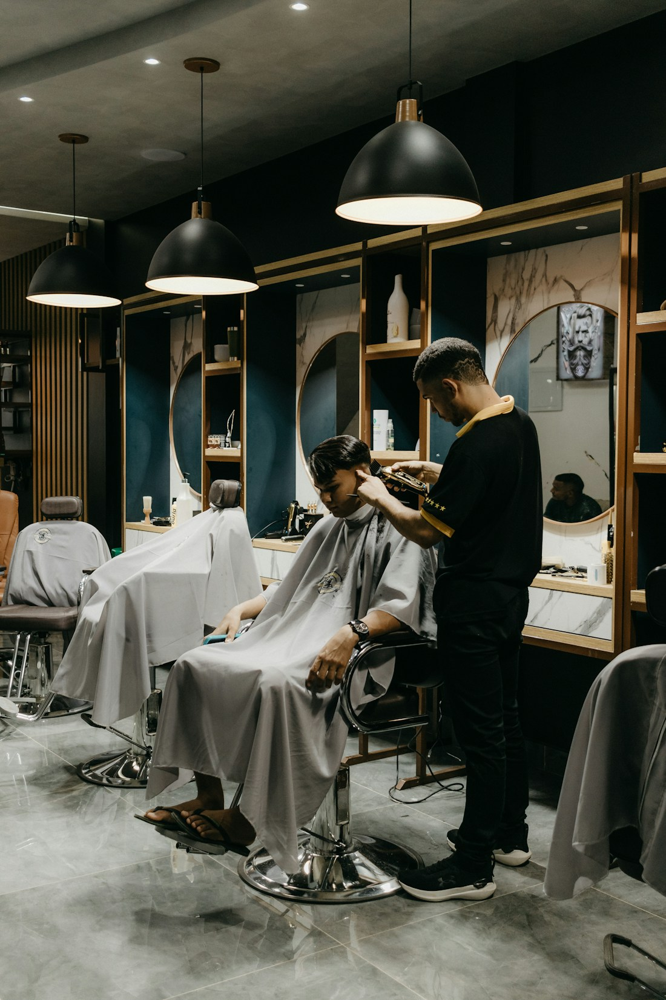
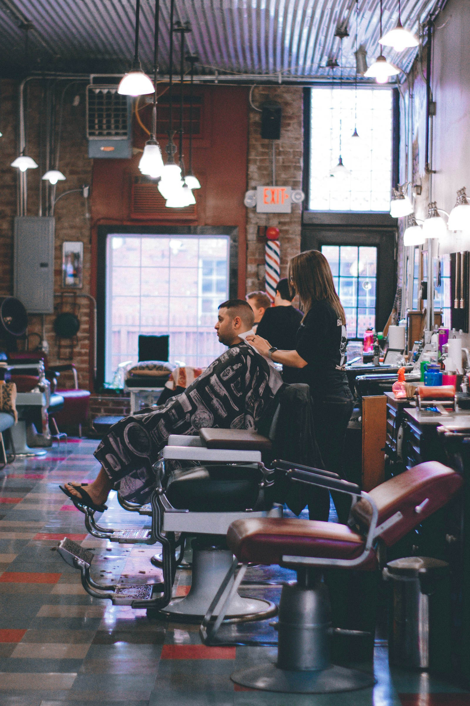

EL FILO / BARBER STUDIOUY — CONCEPTO 01
EL ESTILO NO SE COPIA. SE ENCUENTRA.
TU CORTE.
TUS REGLAS.
FOTOGRAFÍA DE REFERENCIA · NO ES EL LOCAL REAL
FADE✳TIJERA✳BARBA✳COLOR

EL ESPACIO / IMAGEN DE REFERENCIAEL FILO / BARBER STUDIO
UN LUGAR.
MUCHO ESTILO.
Un corte bien hecho empieza por escucharte. Traé tu idea, una foto o las ganas de cambiar: el equipo te ayuda a encontrar tu estilo.
N
NachoFades y clásicos · martes a sábado
R
RuloBarba y navaja · miércoles a sábado
M
MaiteColor y tijera · martes, jueves y viernes
- Martes a viernes
- 10:00 — 20:00
- Sábado
- 09:00 — 17:00
- Domingo y lunes
- Cerrado
Se atiende con turno. El horario de cada profesional puede variar.
Calle Modelo 567, local 2
Barrio Ejemplo · dirección ficticia
Este boceto muestra cómo se presentaría el local. En la versión real irían la dirección, el mapa y las fotos de la barbería.
PASO 01 / 05
EL FILO /DEMO
RECORRIDO COMPLETADO
ASÍ DE
SIMPLE.
Este sería el resumen de tu turno.
No es una reserva real.
No enviamos ni guardamos tus datos. En la web de una barbería real, este paso se conecta con su agenda.